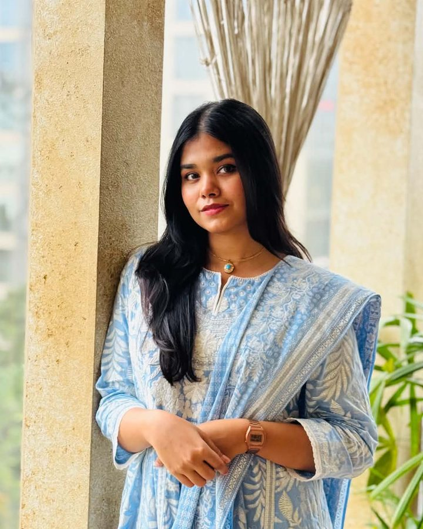

★
2026 · National
Blockchain & AI Olympiad Bangladesh
Honorable Mention in the Artificial Intelligence category with Team CardiShirt, for an AI-powered wearable ECG monitoring system.
Honorable MentionFinal-year Computer Science & Engineering student at United International University and Undergraduate Teaching Assistant, focused on IoT and software development — building connected devices and the software that makes them useful.

I'm a final-year CSE student whose main interests are IoT and software development. I like the whole path from sensor to screen: firmware streaming ECG signals off an ESP32, the models that analyse them, and the backend and interface that put the result in front of a patient's family.
Alongside coursework, I've spent a year as an Undergraduate Teaching Assistant in the CSE department, and I've represented my university at international hackathons and national olympiads.
Honorable Mention in the Artificial Intelligence category with Team CardiShirt, for an AI-powered wearable ECG monitoring system.
Honorable MentionSelected as a Global Nominee — one of the projects advanced from local events to global judging.
Global NomineeParticipated with Team Infinitum in the Harvard T.H. Chan Health Systems Innovation Lab hackathon on building high-value health systems leveraging AI.
ParticipantAn AI-powered wearable ECG monitoring system. A smart shirt streams cardiac signals in real time; a hybrid CNN-LSTM model screens them; an LLM layer explains results in plain language; and families are alerted instantly through Telegram.
An AI-powered healthcare platform connecting patients, doctors, hospitals and pharmacies, with a Bangla-friendly experience. Features include an AI symptom checker, prescription upload with medicine price comparison, doctor search, emergency support and hospital bed management.
An IoT white cane for visually impaired users. I built the safety layer: fall detection with Telegram emergency alerts, wet-surface detection with buzzer warnings, and live GPS tracking for caregivers over ESP8266.
A 2D JavaFX game that teaches programming through reading, quizzes and treasure hunts. I built the single-player mechanics, every Tiled map, enemy behaviour, collision detection and the multiplayer maps.
A semantic security framework that detects indirect prompt-injection attacks hidden in documents retrieved by RAG-based LLM systems.
Adaptive, energy-aware AI routing. It scores each prompt's complexity and profiles the device's live CPU, RAM, GPU and battery, then runs the prompt on a right-sized local Ollama model or on Gemini in the cloud.
Turns bilingual Bangladeshi tax certificates and spoken Bangla into clean, structured English records. PDFs are parsed and fields extracted with an LLM; speech is transcribed with Whisper and processed by a local LLM. Everything is validated and stored in SQL Server, with a Flask dashboard for upload, search and review.
Interview-based study of how people experience uncertainty in AI responses, with design implications for neurodivergent users. Led analysis of AI usage context and avoidance behaviour.